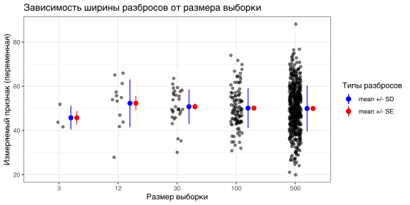
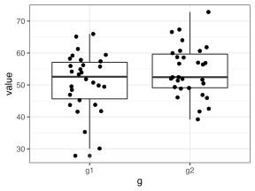

suppressPackageStartupMessages(library(tidyverse))
suppressPackageStartupMessages(library(magrittr))
suppressPackageStartupMessages(library(cowplot))
suppressPackageStartupMessages(library(rstatix))
suppressPackageStartupMessages(library(ggrepel))
library(rio)
theme_set(theme_bw())У меня есть выборка. Я построил по ней 95% доверительный интервал.
Оценки различных параметров делятся на точечные (например, среднее, медиана, мода) и интервальные, характеризующие разброс (дисперсия, стандартное отклонение, стандартная ошибка, доверительный интервал). Какие преимущества имеет использование каждого из этих способов указания разброса? В каком случае вы использовали ту или иную интервальную оценку?
На примере тестовых данных посмотрим, как себя ведет стандартная ошибка в сравнении со стандартным отклонением при разном размере выборки (\(n\)).
set.seed(1)
n = c(3, 12, 30, 100, 500)
sample_sizes = c()
sample_values = c()
for (n_i in n) {
sample_sizes = c( sample_sizes, rep(n_i, n_i) )
sample_values = c( sample_values, rnorm(n_i, mean = 50, sd = 10) )
}
samples = tibble(sample_sizes = as.factor(sample_sizes),
sample_values = sample_values)
samples_summary =
samples %>%
group_by(sample_sizes) %>%
summarise(n = n(),
mean = mean(sample_values),
sd = sd(sample_values),
se = sd(sample_values)/sqrt(n))
ggplot() +
geom_point(aes(x = sample_sizes, y = sample_values),
data = samples,
position = position_jitter(.1),
alpha = 0.5) +
geom_pointrange(aes(x = sample_sizes,
y = mean,
ymin = mean-sd,
ymax = mean+sd,
col = "blue"),
data = samples_summary,
position = position_nudge(.2)) +
geom_pointrange(aes(x = sample_sizes,
y = mean,
ymin = mean-sd/sqrt(n),
ymax = mean+sd/sqrt(n),
col = "red"),
data = samples_summary,
position = position_nudge(.3)) +
scale_colour_manual(name = 'Типы разбросов', # изменяю подписи к легенде
values =c('blue','red'), labels = c('mean +/- SD','mean +/- SE')) +
labs(title = "Зависимость ширины разбросов от размера выборки", x = "Размер выборки", y = "Измеряемый признак (переменная)")
Изучите код, который делает этот график и напишите комментарии к каждому действию - что происходит.
Ответьте на следующие вопросы по графику.
set.seed()).Если нам нужно сравнить две группы, мы можем сделать следующие действия
Сделайте выводы о идентичности или различии в группах для случаев A-C; сравните результаты, полученные этими тремя способами. Для удобства сравнения здесь я буду использовать альтернативную реализацию функции для \(t\)-теста (t.test()), которая может работать с векторами.
set.seed(1)
sample1 = rnorm(30, mean = 50, sd = 10);
sample2 = rnorm(30, mean = 52, sd = 10);
t.test(sample1, sample2)#>
#> Welch Two Sample t-test
#>
#> data: sample1 and sample2
#> t = -1.1245, df = 56.741, p-value = 0.2655
#> alternative hypothesis: true difference in means is not equal to 0
#> 95 percent confidence interval:
#> -6.961113 1.954785
#> sample estimates:
#> mean of x mean of y
#> 50.82458 53.32775t.test(sample1)$conf.int#> [1] 47.37386 54.27531
#> attr(,"conf.level")
#> [1] 0.95t.test(sample2)$conf.int#> [1] 50.35797 56.29753
#> attr(,"conf.level")
#> [1] 0.95set.seed(1)
sample1 = rnorm(30, mean = 50, sd = 10);
sample2 = rnorm(30, mean = 56, sd = 10);
t.test(sample1, sample2)#>
#> Welch Two Sample t-test
#>
#> data: sample1 and sample2
#> t = -2.9214, df = 56.741, p-value = 0.004993
#> alternative hypothesis: true difference in means is not equal to 0
#> 95 percent confidence interval:
#> -10.961113 -2.045215
#> sample estimates:
#> mean of x mean of y
#> 50.82458 57.32775t.test(sample1)$conf.int#> [1] 47.37386 54.27531
#> attr(,"conf.level")
#> [1] 0.95t.test(sample2)$conf.int#> [1] 54.35797 60.29753
#> attr(,"conf.level")
#> [1] 0.95set.seed(94965)
sample1 = rnorm(30, mean = 50, sd = 10);
sample2 = rnorm(30, mean = 54, sd = 10);
t.test(sample1, sample2)#>
#> Welch Two Sample t-test
#>
#> data: sample1 and sample2
#> t = -2.0059, df = 52.904, p-value = 0.04999
#> alternative hypothesis: true difference in means is not equal to 0
#> 95 percent confidence interval:
#> -1.008177e+01 -1.847235e-04
#> sample estimates:
#> mean of x mean of y
#> 49.52482 54.56580t.test(sample1)$conf.int#> [1] 46.50664 52.54301
#> attr(,"conf.level")
#> [1] 0.95t.test(sample2)$conf.int#> [1] 50.40549 58.72611
#> attr(,"conf.level")
#> [1] 0.95Рассмотрим такие две выборки из двух групп (g1 и g2).
# генерируем данные
set.seed(1)
g1 = rnorm(30, mean = 50, sd = 10)
g2 = rnorm(30, mean = 53, sd = 10)
# строим график
tibble(g1, g2) %>%
pivot_longer(everything(), "g") %>%
ggplot(aes(x=g, y=value)) +
geom_boxplot() +
geom_point(position = position_jitter(.2))
Для начала с помощью бутстрепа найдем доверительный интервал для разницы между средними для каждой группы. Для этого возьмем много искусственных выборок (бутстреп-выборки) из данных нам выборок и для каждой симуляции посчитаем разницу между средними.
N = 10000 # число симуляций
diffs = numeric(N)
for (i in 1:N) {
g1__bootstrap_resample = [здесь сгенерируйте бутстреп выборку из выборки 1 с заменой]
g2__bootstrap_resample = [здесь сгенерируйте бутстреп выборку из выборки 1 с заменой]
diffs[i] = [среднее в бутстреп-выборке 1 - среднее в бутстреп-выборке 2]
}Далее постройте гистограмму для полученного распределения разниц и посчитайте доверительный интервал для разницы между группами, т.е. найдете значения, которые ограничивают 2.5% самых низких значений разниц и 2.5% самых больших - этот диапазон есть 95% доверительный интервал, расчитанный перцентильным методом. Сравните этот доверительный интервал с параметрическим \(t\) доверительным интервалом (t.test()). Значимо ли статистически полученное различие?
Бывает статистическая значимость результата (она же достоверность), и совершенно с ней не связанная научная или медицинская (или еще какая-нибудь) значимость. Для определения второй требуется знание той области, в которой проводятся исследования. Например, значимо ли снижение веса с 140 до 139 кг (на 1 кг, 1%) или с 140 до 100 кг (на 40 кг, 40%)? А когда специалист определит какое изменение является значимым, существенным, весомым, тогда уже можно проверять, достоверность того, что это изменение такое.
Теперь мы также можем ответить на другой вопрос. Можно ли считать группы сходными? Предположим, мы считаем, что группы сходны, если они отличаются не более чем на 5 единиц (т.е. различие лежит в корридоре \((-5,\ 5)\)). Итак, посчитайте какая доля значений в diffs будет лежать в этом корридоре: чем больше - тем больше свидетельств в пользу эквивалентности групп. А доля значений, не лежащих в этом корридоре - это будет p-value теста (p > 0.05 => различия слишком большие для эквивалентных групп).
within_limits = sum( логическое условие принадлежности значений diffs диапазону (-5, 5) ) / общее_число_значений
p.value = 1 - within_limits
# проверьте себя с помощью готового теста
# (значения p.value должны быть похожими)
tibble(g1, g2) %>%
pivot_longer(everything(), "g") %>%
lm(value ~ g, .) %>%
emmeans("g") %>%
contrast("dunnett") %>%
test(null = 0, delta = 5, side = "=")